AWS Load Balancing Implementation Project
Project Overview
In this project, I've implemented and configured AWS Elastic Load Balancers to create a highly available and scalable web application infrastructure. This document demonstrates my understanding of AWS load balancing technologies, implementation approaches, and advanced configuration techniques.
It also demonstrates the implementation and configuration of Auto Scaling Groups (ASGs) in AWS to create a highly available, fault-tolerant, and elastically scalable web application architecture.
Business Context
Modern web applications require high availability, fault tolerance, and the ability to scale with user demand. Load balancers are a critical component in achieving these requirements by distributing incoming traffic across multiple backend servers. This project demonstrates my ability to implement such solutions in AWS environments.
Technologies Used
- Amazon EC2 (Elastic Compute Cloud)
- Elastic Load Balancing (ELB)
- Application Load Balancer (ALB)
- Network Load Balancer (NLB)
- Gateway Load Balancer
- Security Groups
- Target Groups
- Health Checks
Implementation Details
Phase 1: Setting Up the Backend Infrastructure
The first step was to create the backend servers that would handle the application traffic:
- Launched two EC2 instances named "My First Instance" and "My Second Instance"
- Used Amazon Linux 2 on t2.micro instances for cost-effectiveness
- Configured a security group (Launch-Wizard-1) to allow HTTP and SSH traffic
- Implemented a bootstrap script using EC2 user data to initialize a simple web server on each instance
- Verified direct access to each instance via their public IP addresses
Each instance displayed a simple "Hello World" message with a unique identifier, confirming they were operational and serving content independently.
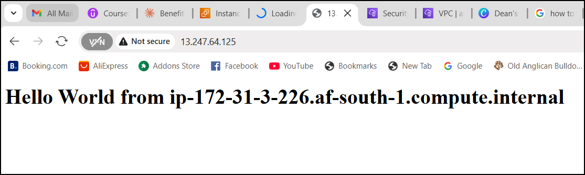
Phase 2: Implementing the Application Load Balancer
After establishing the backend infrastructure, I implemented an Application Load Balancer to distribute traffic:
- Created an Application Load Balancer (DemoALB) configured for internet-facing traffic
- Deployed the ALB across multiple availability zones for high availability
- Created a dedicated security group (demo-sg-load-balancer) with appropriate rules
- Configured HTTP listener on port 80
- Created a target group (demo-tg-alb) and registered both EC2 instances
- Verified load balancer functionality by observing traffic distribution between instances
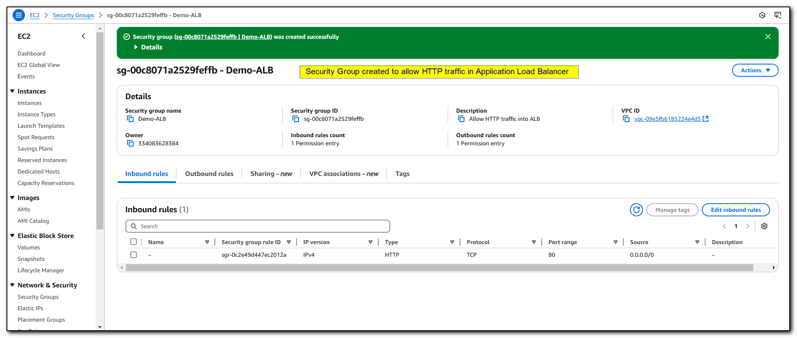
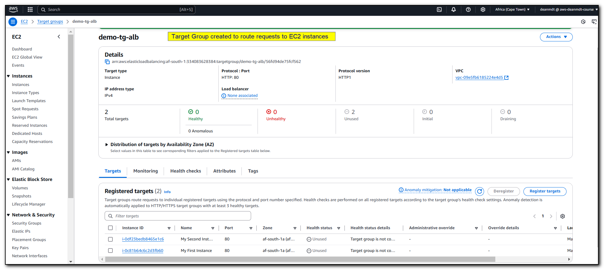
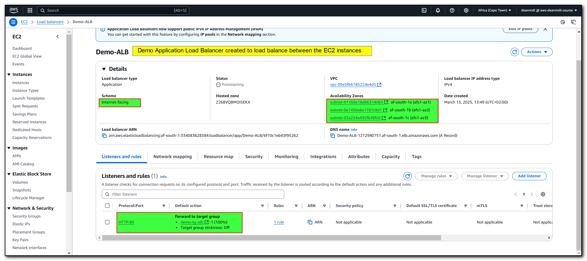
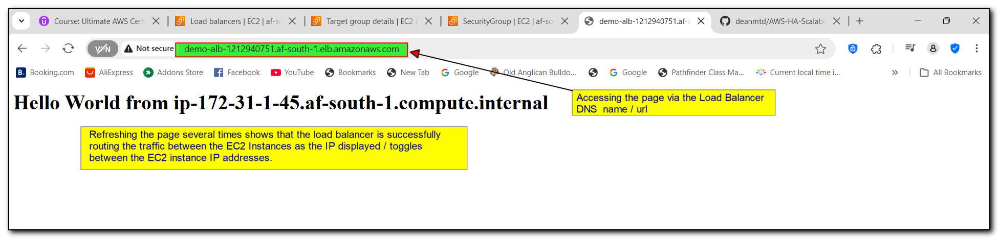
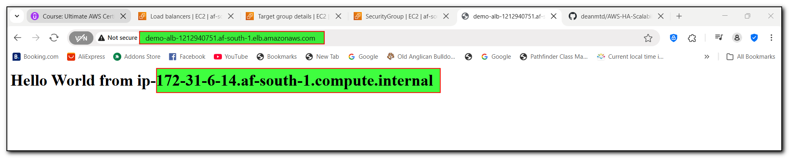
The ALB successfully distributed traffic between both instances in a round-robin fashion, as evidenced by the changing instance identifiers in the response upon refreshing the browser.
Phase 3: Testing Fault Tolerance
To demonstrate the fault tolerance capabilities of the load balancer:
- Stopped one EC2 instance to simulate a failure
- Observed the ALB's health check mechanism marking the stopped instance as unhealthy
- Confirmed that all traffic was automatically redirected to the remaining healthy instance
- Restarted the stopped instance and verified it was automatically returned to service
- Observed traffic being distributed to both instances again
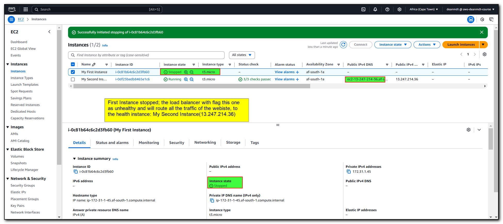
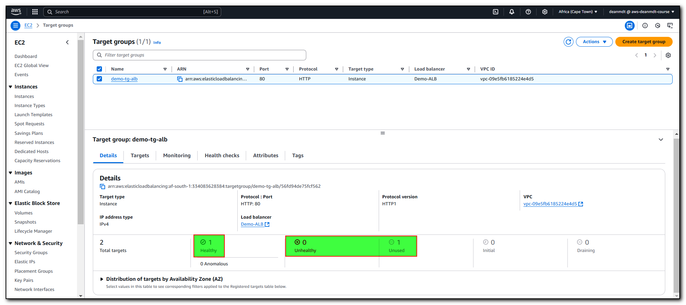
This test confirmed that the load balancer could detect failed instances and automatically route traffic to healthy instances, providing continuous service availability.
Phase 4: Advanced Load Balancer Configurations
Enhanced Security Configuration
I improved the security posture of the infrastructure by implementing a more restrictive traffic flow:
- Modified the EC2 instance security group to only accept traffic from the load balancer
- Removed direct public access to EC2 instances
- Verified that direct access to instances via public IPs was no longer possible
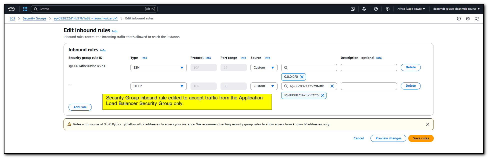
- Confirmed that access through the ALB continued to function correctly
This configuration ensures that all web traffic must flow through the load balancer, providing an additional security layer.
Custom Routing Rules
I implemented advanced routing rules in the ALB to handle specific request patterns:
- Created a custom routing rule with path-based routing
- Configured the rule to return a custom error response for requests to the "/error" path
- Set the rule priority to ensure proper processing order
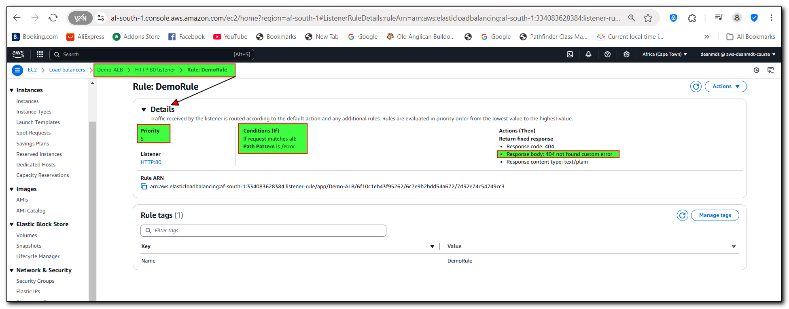
- Tested the rule by accessing the "/error" path, confirming the custom error response
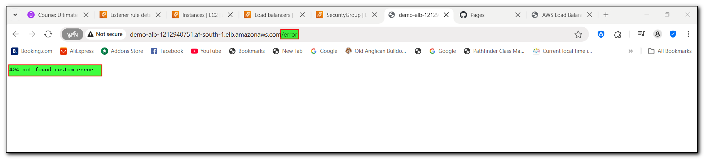
Network Load Balancer Configurations
AWS Network Load Balancers distribute incoming application traffic across multiple targets, ensuring high availability and low latency.
- Created an Network Load Balancer (DemoNLB) configured for internet-facing traffic
- Deployed the NLB across multiple availability zones for high availability
- Created a dedicated security group (demo-sg-nlb) with appropriate rules
- Configured HTTP listener on port 80
- Created a target group (demo-tg-nlb) and registered both EC2 instances
- Created a dedicated security group (demo-sg-nlb) with appropriate rules
- I also examined the instances and their associated security group by navigating to **Security** and then **Security Groups** to open it.
- In the inbound rules, it was configured to allow **SSH** access from **anywhere** and **HTTP** access from this security group.
- An additional rule was added to also allow **HTTP** traffic from our Network Load Balancer.
- Finally, verified load balancer functionality by observing traffic distribution between instances
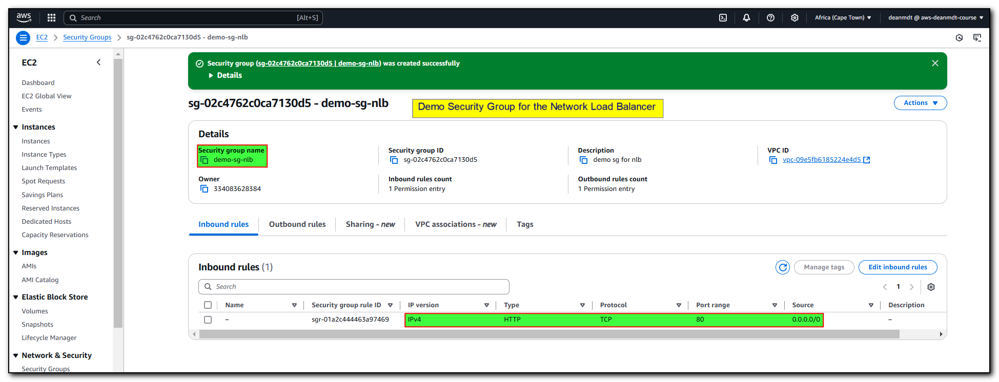
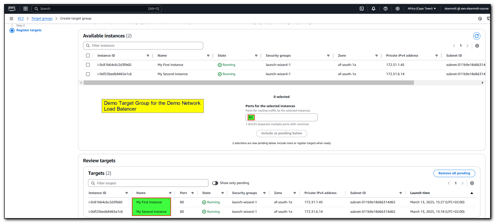
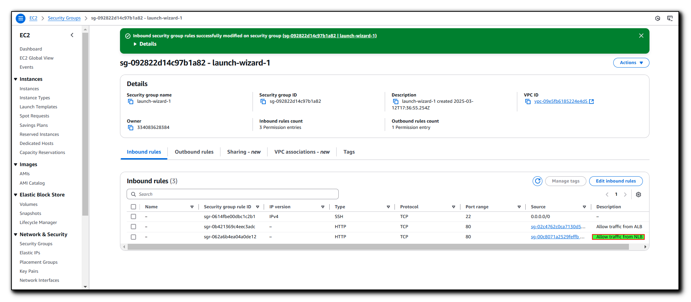
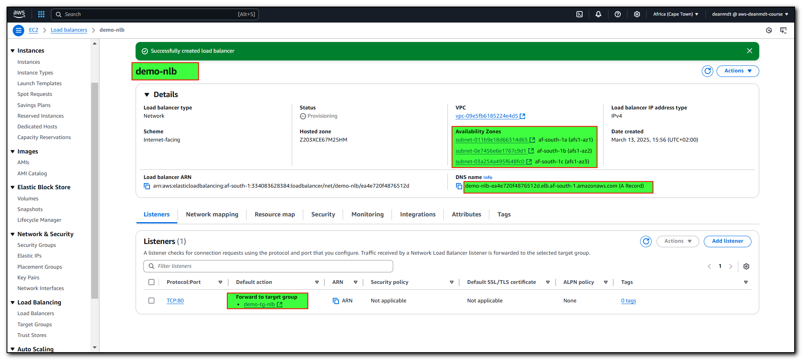
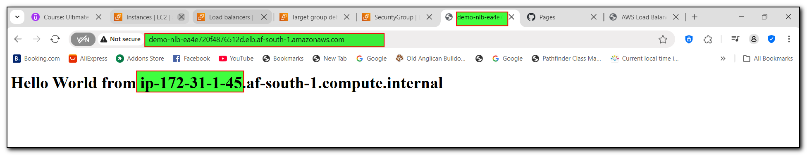
The NLB successfully distributed traffic between both instances in a round-robin fashion, as evidenced by the changing instance identifiers in the response upon refreshing the browser.
This demonstrates the ability to implement complex routing logic based on URL patterns, which is essential for modern web applications.
Session Stickiness Configuration
To support applications that require session persistence:
- Enabled sticky sessions at the target group level
- Configured load balancer-generated cookies with a one-day expiration
- Tested session stickiness by repeatedly refreshing the browser
- Verified that requests from the same browser session were consistently routed to the same backend instance
- Examined network traffic to confirm the presence and functionality of session cookies
I also analyzed the different types of sticky session implementations:
- Application-based cookies (custom or load balancer-generated)
- Duration-based cookies (AWSALB for ALB, AWSELB for Classic Load Balancer)
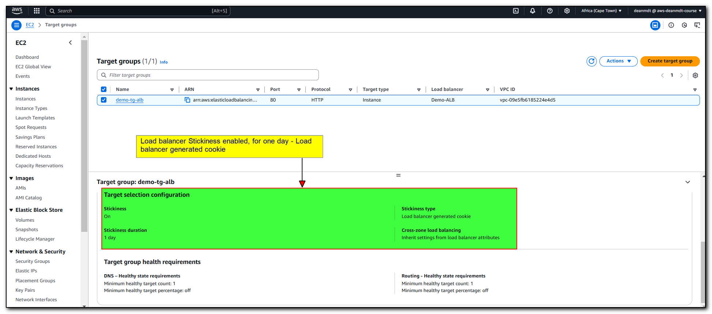
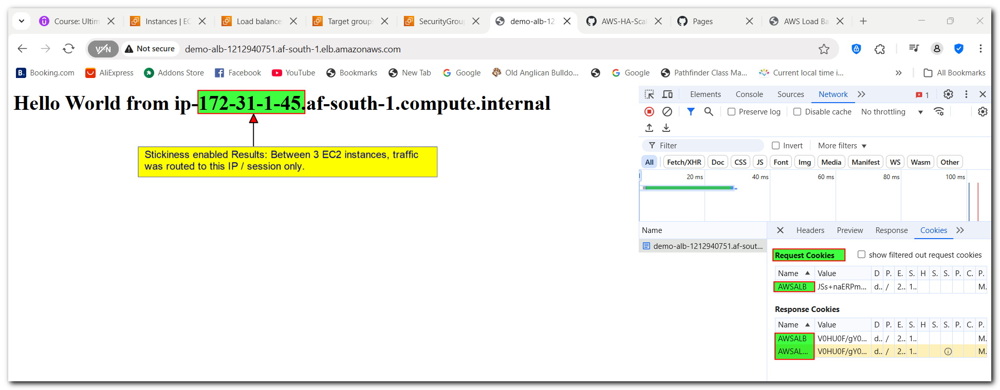
Cross-Zone Load Balancing
I studied and configured cross-zone load balancing to understand traffic distribution across availability zones:
- Analyzed the default behavior of different load balancer types:
- ALB: Cross-zone balancing enabled by default
- NLB and Gateway LB: Cross-zone balancing disabled by default
- Configured cross-zone balancing settings on different load balancer types
- Understood the cost implications of cross-zone data transfer
This configuration ensures even distribution of traffic across all instances regardless of their availability zone, which is important for balanced scaling.
SSL/TLS Certificate Implementation
To secure the application traffic, I explored SSL/TLS certificate implementation:
- Explored HTTPS listener on port 443 for the ALB
- Explored Configuration for TLS listener for the NLB
- Explored certificate management options:
- Amazon Certificate Manager (ACM)
- IAM certificate management
- Direct certificate import
This demonstrates my understanding of securing web traffic and implementing industry-standard encryption protocols.
Technical Challenges and Solutions
- Challenge: Ensuring instances remain accessible through the load balancer while restricting direct access
Solution: Implemented security group rules that only allow traffic from the load balancer security group
- Challenge: Managing session persistence for applications requiring user state
Solution: Configured sticky sessions with appropriate cookie settings and expiration policies
- Challenge: Understanding the performance implications of cross-zone load balancing
Solution: Analyzed the default behaviors and cost implications for different load balancer types
Project Outcomes
This implementation achieved several key business objectives:
- High Availability: The application remains available even if individual instances fail
- Scalability: The infrastructure can easily scale by adding more instances to the target group
- Enhanced Security: Traffic flow is controlled and restricted to appropriate paths
- Flexibility: Advanced routing rules support complex application requirements
- Session Management: Support for stateful applications through sticky session configuration
Key Learnings
This project provided valuable insights into AWS load balancing technologies:
- Different load balancer types (ALB, NLB, Gateway LB) serve different use cases based on protocol and performance requirements
- Health checks are crucial for automatic failover and high availability
- Security groups can be linked to create secure traffic flows
- Advanced routing rules enable sophisticated application architectures
- Session stickiness must be balanced against even load distribution
- Cross-zone load balancing affects both performance and cost
- SSL/TLS implementation is straightforward but requires proper certificate management
Auto Scaling Groups in AWS: Implementation and Best Practices
Auto Scaling Groups (ASGs) in AWS provide a powerful mechanism to ensure application availability and cost efficiency by automatically adjusting the number of EC2 instances based on demand. This project demonstrates the implementation of ASGs integrated with Application Load Balancers (ALBs) and various scaling policies to achieve optimal performance.
Architecture Overview
The architecture implemented consists of:
- Launch Template: Defines the configuration of EC2 instances to be launched
- Auto Scaling Group: Manages the lifecycle of EC2 instances
- Application Load Balancer: Distributes traffic to healthy instances
- Target Group: Registers instances with the load balancer
- Scaling Policies: Determine when and how to scale instances
- CloudWatch Alarms: Trigger scaling actions based on metrics
Implementation Steps
Creating a Launch Template
The launch template defines the configuration for EC2 instances that will be created by the Auto Scaling Group.
- Navigate to the EC2 console and select "Launch Templates" from the left navigation panel
- Click "Create Launch Template"
- Configure the template with the following settings:
- Name:
my-demo-template
- Description:
Template for ASG demo
- AMI:e.g. Amazon Linux 2 (x86)
- Instance Type: t2.micro (Free tier eligible)
- Key Pair: EC2-tutorial (or your existing key pair)
- Security Group: Select an existing security group (e.g., launch-wizard-1)
- Storage: 8 GB GP2 volume
- User Data: Install and configure a web server
#!/bin/bash
yum update -y
yum install -y httpd
systemctl start httpd
systemctl enable httpd
echo "<h1>Hello World from $(hostname -f)</h1>" > /var/www/html/index.html
Setting Up an Auto Scaling Group
- Navigate to "Auto Scaling Groups" in the EC2 console
- Click "Create Auto Scaling Group"
- Configure the ASG with the following settings:
- Name:
Demo-ASG
- Launch Template: Select the previously created template
- VPC and Availability Zones: Select your VPC and multiple AZs for high availability
- Load Balancer Integration: Enable
- Target Group: Select your existing ALB target group
- Health Checks: Enable both EC2 and ELB health checks
- Desired Capacity: 1
- Minimum Capacity: 1
- Maximum Capacity: 1 (to be modified later for scaling demonstrations)
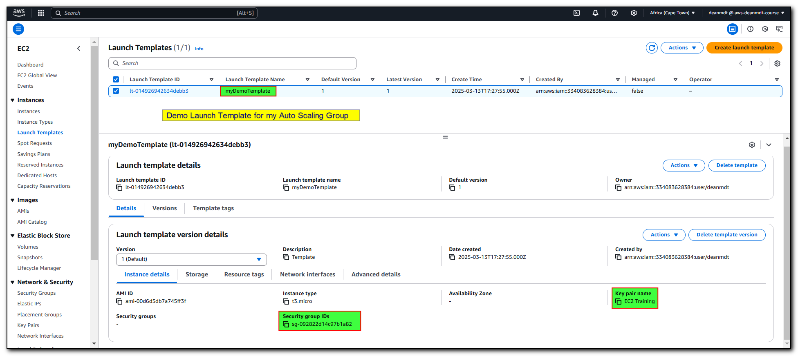
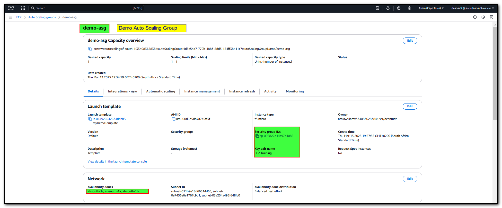
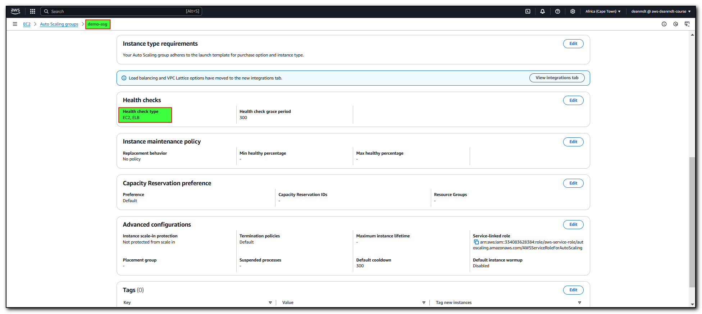
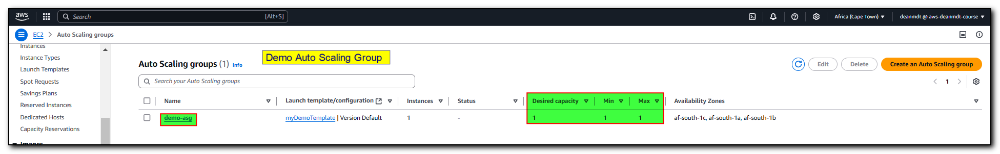
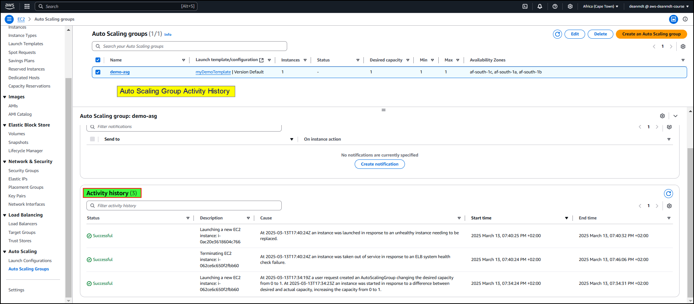
Integrating with Load Balancers
Connecting your ASG with a load balancer ensures traffic is distributed across healthy instances:
- During ASG creation, select "Attach to an existing load balancer"
- Choose "Choose from your load balancer target groups"
- Select your target group (e.g.,
demo-tg-alb)
- This integration ensures new instances are automatically registered with the load balancer
- When instances are terminated, they are automatically deregistered
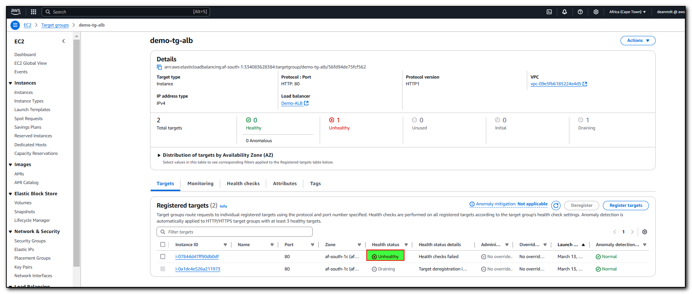
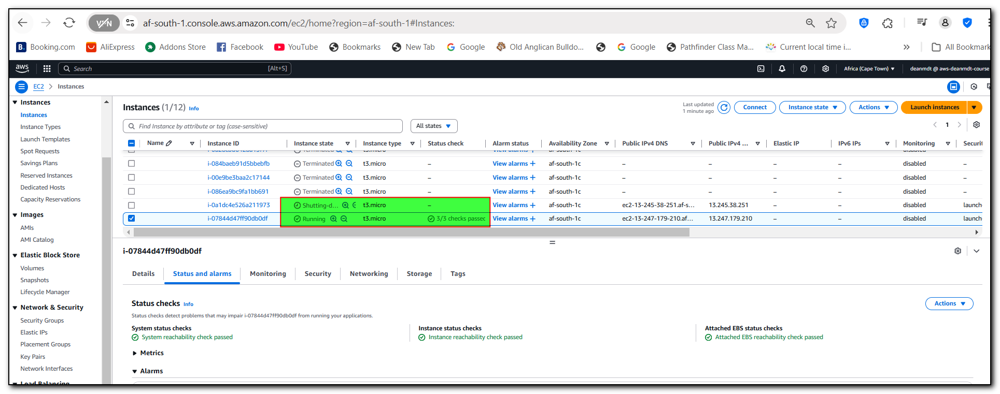
Health Check Configuration
Proper health check configuration ensures that unhealthy instances are replaced:
- Enable EC2 health checks to detect instance-level failures
- Enable ELB health checks to detect application-level failures
- Set appropriate health check grace periods to allow instances time to initialize
Scaling Policies
Manual Scaling
Manual scaling allows you to adjust capacity as needed:
- Select your ASG and click "Edit"
- Modify the "Desired Capacity" value
- Ensure the new desired capacity is within the minimum and maximum capacity range
- The ASG will automatically launch or terminate instances to match the desired capacity
Dynamic Scaling with Target Tracking
Target tracking is the simplest way to implement dynamic scaling:
- Select your ASG and navigate to "Automatic Scaling"
- Select "Create Target Tracking Scaling Policy"
- Configure the policy:
- Policy Name:
target-tracking-policy
- Metric: Average CPU Utilization
- Target Value: 40%
- The ASG will automatically adjust capacity to maintain the target metric value
Implementation example:
Metric: Average CPU Utilization
Target: 40%
Scale Out: When CPU > 40% for 3 consecutive data points (3 minutes)
Scale In: When CPU < 28% for 15 consecutive data points (15 minutes)
Step Scaling
Step scaling provides more granular control over scaling actions:
- Create CloudWatch alarms for your scaling conditions
- Configure step scaling policies with different adjustment amounts based on alarm thresholds
- For example:
- If CPU > 60%, add 2 instances
- If CPU > 80%, add 4 instances
Simple Scaling
Simple scaling allows basic scale out/in based on a single CloudWatch alarm:
- Create a CloudWatch alarm for your scaling condition
- Configure a simple scaling policy that adds or removes a specific number of instances or percentage of the group
Scheduled Scaling
Scheduled scaling is useful for predictable workload patterns:
- Navigate to "Scheduled Actions" in your ASG
- Create a schedule with specific capacity settings
- Configure the recurrence pattern (one-time, daily, weekly, etc.)
- Specify start and end times if applicable
Predictive Scaling
Predictive scaling uses machine learning to forecast capacity needs:
- Navigate to "Predictive Scaling Policies"
- Select metrics to analyze (e.g., CPU utilization)
- Set target utilization values
- AWS will use machine learning to analyze historical patterns and scale proactively
Testing
Stress Testing
To test dynamic scaling policies:
- Connect to an EC2 instance using EC2 Instance Connect
- Install the stress utility:
sudo amazon-linux-extras install epel -y
sudo yum install stress -y
- Run a stress test to increase CPU utilization:
stress -c 4
- Monitor the ASG activities and CloudWatch metrics to observe scaling actions
Monitoring Scaling Activities
- Navigate to the "Activity" tab in your ASG
- Review "Activity History" to see scaling actions
- Check CloudWatch alarms to understand what triggered the scaling
- Monitor instance states in the "Instance Management" tab
Demonstration Results
The following results were observed during testing:
- Initial State:
- 1 EC2 instance running
- CPU utilization near 0%
- Instance healthy and registered with the load balancer
- After Stress Test Began:
- CPU utilization increased to nearly 100%
- CloudWatch alarm triggered (CPU > 40%)
- ASG scaled out from 1 to 2 instances
- As CPU remained high, scaled to 3 instances
- After Stress Test Ended:
- CPU utilization dropped below 28%
- After 15 consecutive data points, scale-in action triggered
- ASG reduced capacity from 3 to 2 instances
- After continued low utilization, reduced to 1 instance
This demonstration confirmed the target tracking policy correctly adjusted capacity based on CPU utilization.
Best Practices and Recommendations
- Right-size your instances: Choose appropriate instance types for your workload
- Set appropriate thresholds: Avoid scaling too aggressively or too conservatively
- Configure scale-in protection: Prevent important instances from being terminated
- Use multiple AZs: Distribute instances across availability zones for high availability
- Implement proper health checks: Ensure unhealthy instances are detected and replaced
- Use cool-down periods: Prevent rapid scaling oscillations
- Combine scaling policies: Use scheduled scaling for predictable patterns and dynamic scaling for unexpected changes
- Monitor scaling activities: Regularly review scaling actions and adjust policies as needed
Conclusion
This project demonstrates my ability to design, implement, and configure AWS load balancing solutions that provide high availability, security, and scalability for web applications. The implementation showcases both basic functionality and advanced configurations that address real-world application requirements. By successfully completing this project, I've shown proficiency in AWS infrastructure, networking concepts, and security practices that are essential for modern cloud environments.
I have demonstrated the implementation of Auto Scaling Groups in AWS to create a scalable and highly available web application architecture. By configuring launch templates, integrating with load balancers, and implementing various scaling policies, we achieved automatic adjustment of capacity based on demand.
The target tracking policy effectively maintained CPU utilization around the target value, scaling out during high load and scaling in during periods of low utilization. This approach ensures optimal performance while minimizing costs by running only the necessary number of instances.
Auto Scaling Groups provide a powerful solution for handling variable workloads and ensuring application availability without manual intervention.